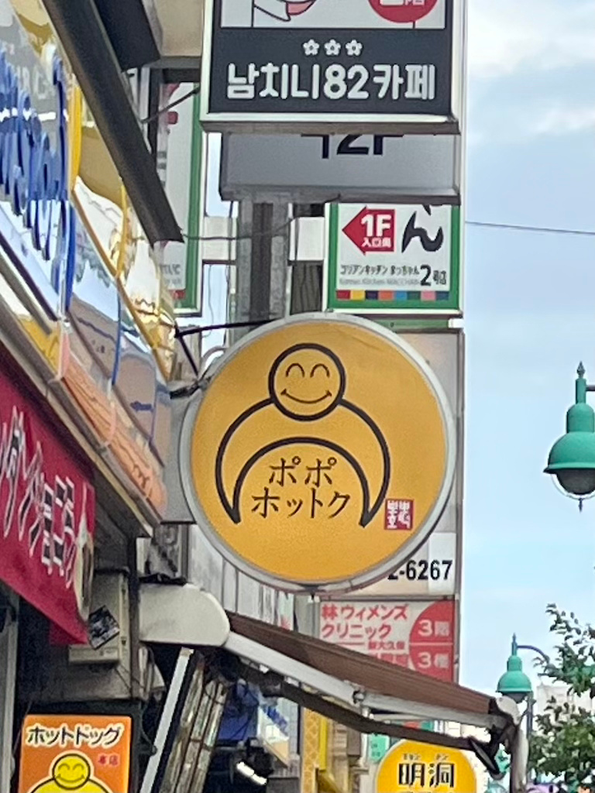
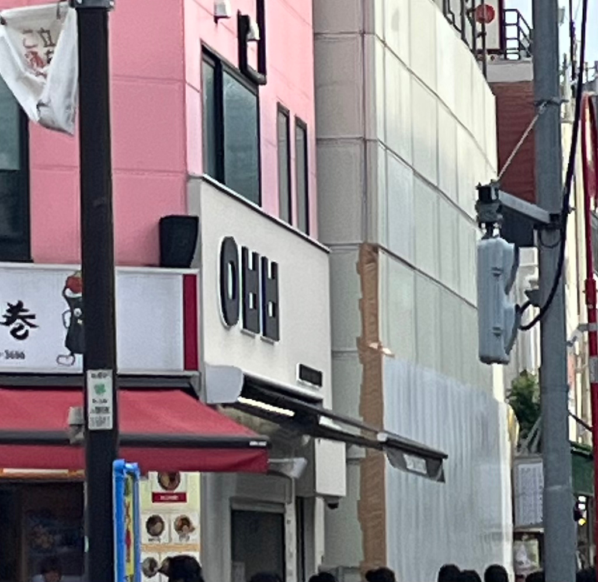
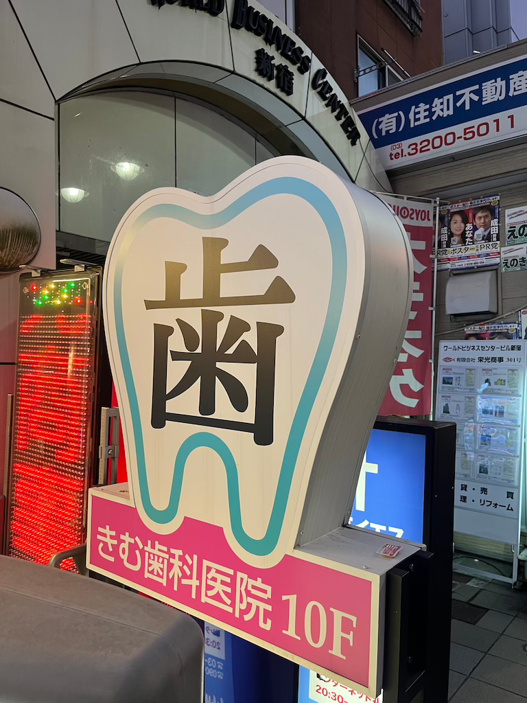

撮影日：10月13日
撮影者：鹿井華
撮影場所：新大久保

POPOホットク
POPOホットクでは、食べたら一日HAPPYになれる韓国屋台料理を提供しています。
看板の丸い印象のデザインがホットクの丸いフォルムを連想させます。

ABEBE BAKERY
「アベベ・ベーカリー」は済州島(チェジュド)に本店を構える人気のクリームパン専門カフェです。
韓国語で「아베베(アベベ)」と書き、ハングルの左側「ㅇㅂㅂ」だけをロゴとしています。
ハングルなのでパッと見じゃなんのお店か分かりませんでしたが、逆に気になって寄ってみたくな
りました。

きむ歯科医院
韓国語でも診断ができるのが特徴の歯科クリニックです。
誰が見ても歯医者だとわかるようなデザインで、大通りの目立った場所にあるのでクリームパンを食べ
すぎて歯が痛くなった時にもすぐ駆け込めます。
参考文献
ABEBEベーカリーinstagram
KONEST ABEBE BAKERY
POPOホットクX
きむ歯科医院